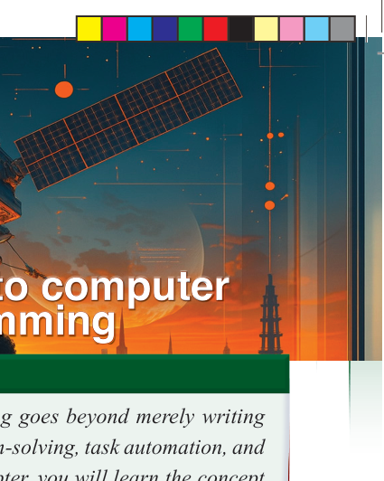
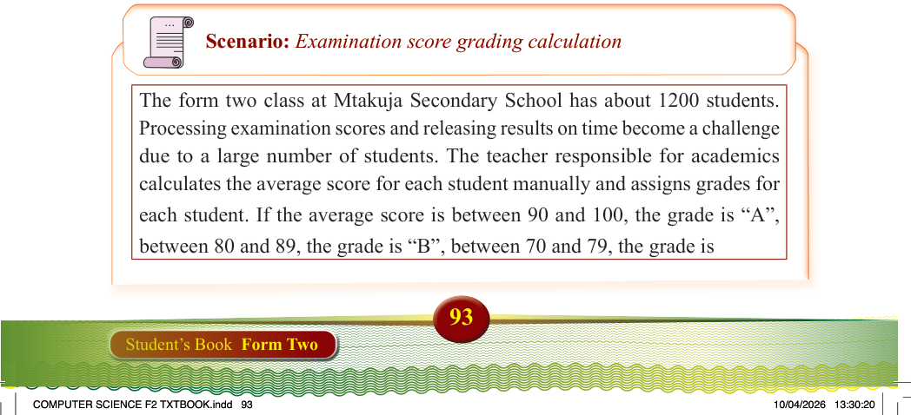
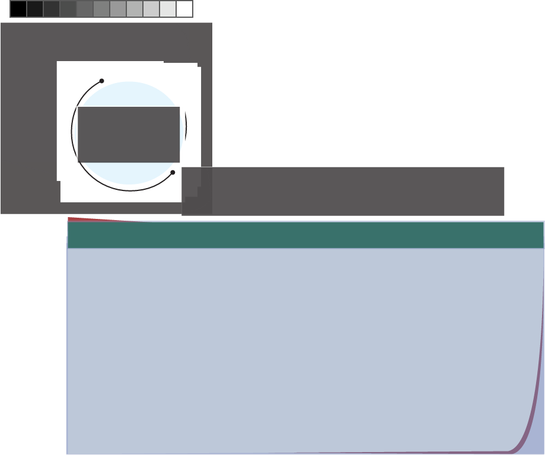

Chapter
Three
Introduction
In today’s digital world, computer programming goes beyond merely writing
code. It is a powerful skill that facilitates problem-solving, task automation, and
the creation of innovative solutions. In this chapter, you will learn the concept
of computer programming, understanding computers and programming from
hardware to code, important terms in programming, and an introduction to
programming languages. You will also learn about algorithms in programming,
data types and structures, problem-solving skills, and debugging. The competencies
developed will impart to you a diverse range of abilities vital for solving complex
real-life problems, and fostering innovation.
Think
How to compute the examination grades for 1000 students
The concept of computer programming
Scenario: Examination score grading calculation
The form two class at Mtakuja Secondary School has about 1200 students.
Processing examination scores and releasing results on time become a challenge
due to a large number of students. The teacher responsible for academics
calculates the average score for each student manually and assigns grades for each student. If the average score is between 90 and 100, the grade is “A”, between 80 and 89, the grade is “B”, between 70 and 79, the grade is
Introduction to computer
programming